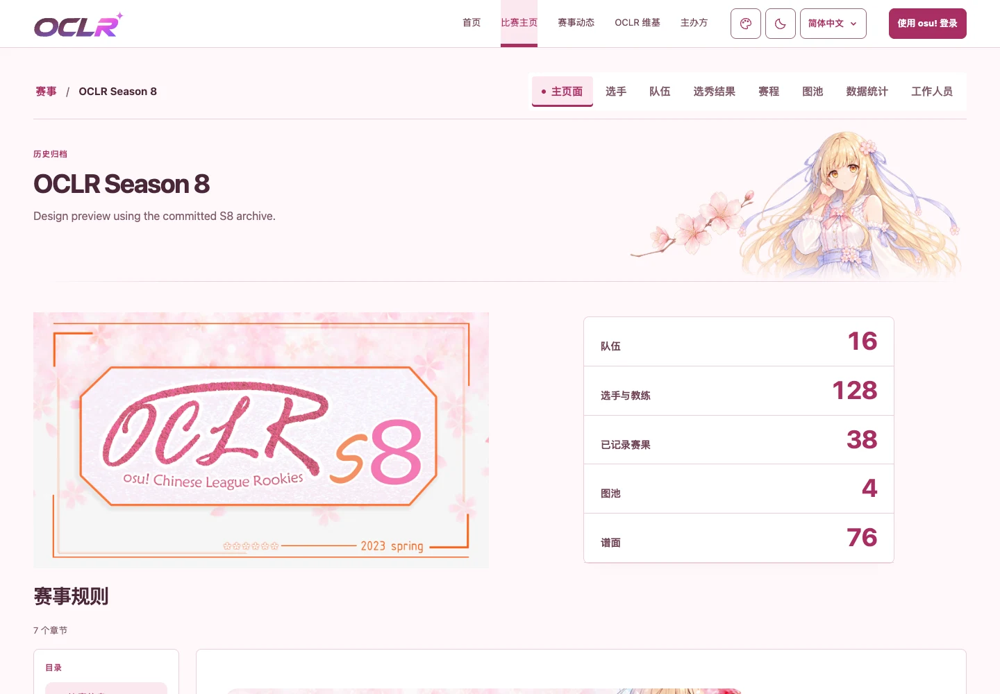

圖片來自 S8 標題比例修復 ce92b4d 的實際頁面，UI 基於
main d34378e。使用 SSR 外觀偏好、打包樣式與正式素材；
花枝已精修，移除強制折角，以少量 1px 橙色印刷線呼應原主視覺，頁首導覽採透明底色與單條細底線。
原始 RULES banner 由主辦方提供；半身角色為參考該圖補全的候選插畫。素材與完整生成記錄
標題比例修復：937px Light · Dark · 手機（實際頁面原生 2× 截圖）
女主角精修局部：937px Light · Dark · 390px 手機（實際頁面原生 2× 截圖）
規則區完整 banner：桌面 Light · 桌面 Dark · 手機 Light · 手機 Dark
